以2π为周期，从（35）可推知β是一整数。欧拉断言，对一固定的β存在无穷多个根ω，所以可发出无穷多种单音。然而，他没有算出这些根来。他确曾试图寻求（36）的第二个解，但是失败了。泊松(23)独立地得到了膜振动理论，通常把这完全归于他。
以2π为周期，从（35）可推知β是一整数。欧拉断言，对一固定的β存在无穷多个根ω，所以可发出无穷多种单音。然而，他没有算出这些根来。他确曾试图寻求（36）的第二个解，但是失败了。泊松(23)独立地得到了膜振动理论，通常把这完全归于他。3．波动方程的推广
正当弦振动问题的论战还在进行的时候，对乐器的兴趣引起了进一步的工作，不仅有物理结构的振动方面的，而且还有与声音在空气中传播有关的水力学问题方面的。从数学上来说，这些问题都牵涉到波动方程的推广。
在1762年欧拉着手研究粗细可变弦的振动问题，他曾受到一个音乐审美学主要问题的推动。拉莫（Jean-Philippe Rameau，1683—1764）在1726年阐明乐音的和谐乃是由于下述事实：任一声音的音调的成分是基音的音调的泛音；也就是说，它们的频率是基音频率的整数倍。但是，欧拉在他的《音乐理论的新颖研究》（Tentamen Novae Theoriae Musicae，1739）(16)中主张只是在合适的乐器里才有基调的和谐的泛音。于是他力图证明变粗细的或有不均匀密度σ（x）及张力T的弦发出不和谐的泛音。
现在偏微分方程变成
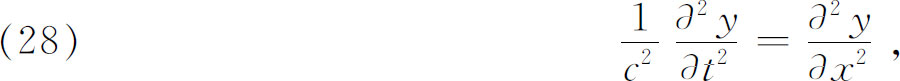
而其中c是x的函数。第一个重要的结果是由欧拉在《粗细不匀弦的振动》（On the Vibratory Motion of Non-Uniformly Thick Strings）一文(17)中得到的。欧拉断言求其通解超过了分析的能力，他得到当给定质量分布为
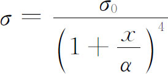
的特殊情况时的一个解，其中σ0和α是常数。那么
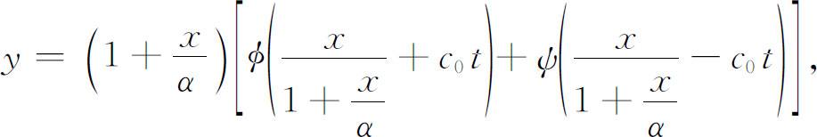
这里
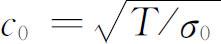
。模式或谐音的频率由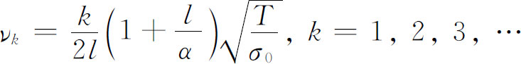
给出。所以相继两个频率的比值和粗细均匀的弦振动的相继两个频率的比是相同的，但是基音的频率不再与长度成反比例。
在1762年或1763年的这篇文章中，欧拉还考察由不同的粗细m，n且分别长a，b的两段弦连接而成的弦的振动。他推导了各个模式的各个频率ω的方程。这些都终于被证明是
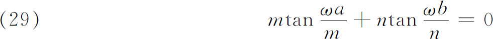
的解，而且他在特殊情况下解得了ω。（29）的解称为该问题的特征值或本征值。我们将会看到，这些值在偏微分方程理论中有根本的重要性。从（29）显然可见特征频率不是基频的整数倍。
然而欧拉在另一篇关于粗细可变的弦振动问题的文章(18)中再次研究这个问题，他从（28）出发，证明了存在函数c（x），对它说来较高音调的频率不是基频的整倍数。
达朗贝尔也研究了变粗细弦(19)。这里他用了他早些时候对常密度弦引进的一种重要解法。前些时候在试图解弦振动问题时达朗贝尔引进了分离变量的思想，这是现在解偏微分方程的一种基本方法(20)。为解方程
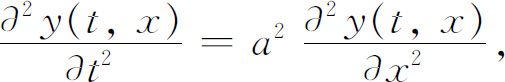
达朗贝尔令
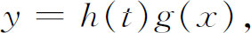
代入微分方程，得到
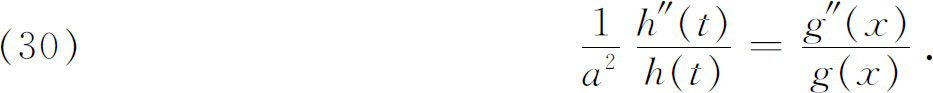
然后，像我们现在所做的一样，他论证由于
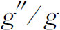
当t变化时不变，它必是常数，类似的论证也适用于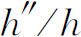
，这个表达式也必须是常数。这两个常数相等，并记之为A。这样他得到两个分离的常微分方程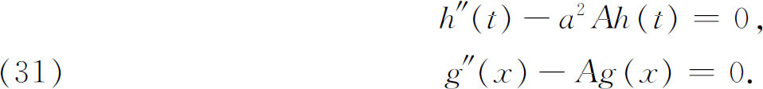
因为a和A是常数，上述每个方程都容易求解，达朗贝尔得到
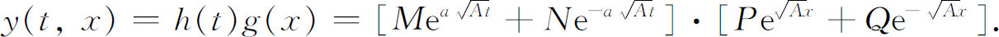
端点条件
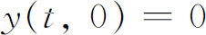
和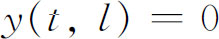
使达朗贝尔断定g（x）必然形如ksin Rx，而h（t）也必有同样的形式，因为y（t，x）对t必是周期的。他把问题就搁在那里了。丹尼尔·伯努利在1732年处理一端吊起的链的振动时曾经用了分离变量的思想，但是达朗贝尔更为明确，尽管他没有完成这种解法。达朗贝尔在他的1763年的文章中，把波动方程写成
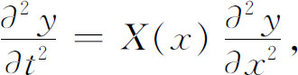
并寻找形状为
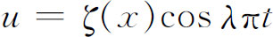
的解。对ζ他得到方程
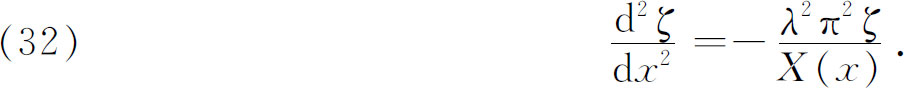
现在达朗贝尔必须确定ζ，使得在弦的两端ζ是0。经过详细的分析，他证明存在λ的一些值，对这样的值，ζ满足这些条件。可是，在这里他确实没有洞察到存在着无穷多个λ的值。这类研究的重要性在于，它是常微分方程边值或特征值问题方向上的另一个步骤。
连续水平重绳的横振动受到欧拉的研究。在《弦自身重力对弦运动的效应修正》（On the Modifying Effect of Their Own Weight on the Motion of Strings）(21)一文中，他得到微分方程
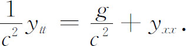
对于c为常数及在端点x＝0，x＝l处固定的情形，欧拉求得
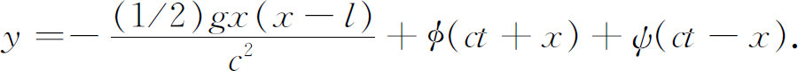
这样一来，除去产生了一个对称抛物线图像
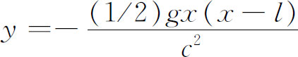
的振动之外，结果与“无重量”的弦（即重量被忽略的）一样。
马上我们就要看到，欧拉在鼓振动的文章中（也可见第21章第4，6节）引进了全部第一类贝塞尔函数，而且在这篇发表于1781年的文章中他注意到用贝塞尔函数的级数表示任一运动是可能的［尽管他不同意丹尼尔·伯努利（在弦振动问题中）关于任一函数能表示成三角函数级数的主张］。
直到18世纪末，别的很多人还在发表关于振动弦和悬链的文章，前面提到过的文章仅仅是这类文章的代表。作者们继续持不同意见，互相纠正，并在这样做的时候犯种种错误，其中包括与他们自己以前讲过的甚至证明过的相矛盾的东西。他们是在不严密的论证的基础上，并且常常在恰恰是个人的偏爱和执信的基础上做出断言、论点和反驳的。他们为了证明他们的论点而引用的文章并没有证明他们所主张的东西。他们还求助于使用挖苦、讽刺、谩骂和自吹自擂等办法，与这些攻击混杂在一起的是为了求宠，特别是为了求宠于达朗贝尔［因为他对普鲁士的腓特烈二世（FrederichⅡ）有相当大的影响，又是柏林科学院的领导］而表现出的表面上的一致。
迄今为止讲到的二阶偏微分方程只包含一个空间变量和时间。18世纪也没有超出这个范围太远。欧拉在1759年的一篇文章(22)中研究了矩形鼓的振动，这就考虑了二维物体。对于鼓表面的垂直位移z，欧拉得到方程
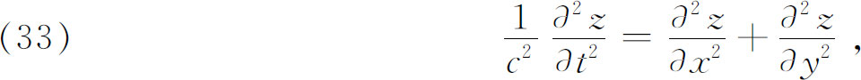
其中x和y代表鼓上任一点的坐标，c由质量和张力确定。欧拉试用
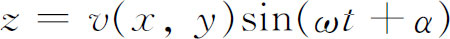
求解，并发现
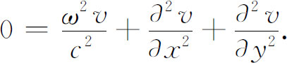
这个方程有形如
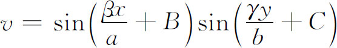
的正弦形解，这里
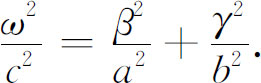
鼓的尺寸是a和b，所以0≤x≤a和0≤y≤b。当初速为0时，B和C可取为0。如果边界固定，则β＝mπ和γ＝nπ，其中m，n是整数。于是由于ω＝2πν（此处ν是每秒频率），他立即得到频率是
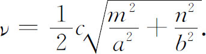
然后，他考虑圆形鼓，把（33）变换成极坐标（一个具有高度独创性的步骤），得到
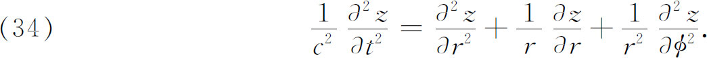
他用形式
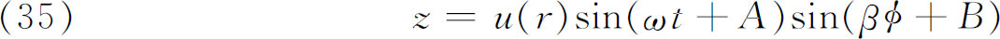
试解，因此u（r）满足
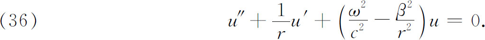
这里出现了通用形式的贝塞尔方程（参阅第21章第6节）。接着，欧拉计算一个幂级数解
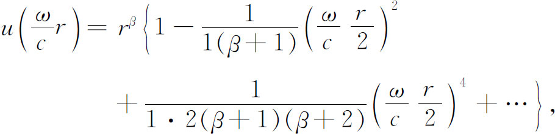
这可以用我们现在的记号写成
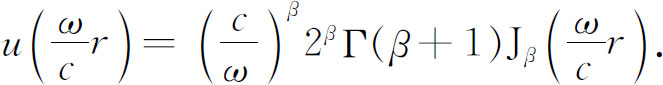
因为边缘r＝a必须保持固定，所以
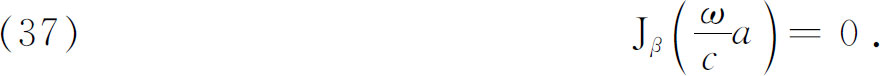
因为z必须关于以2π为周期，从（35）可推知β是一整数。欧拉断言，对一固定的β存在无穷多个根ω，所以可发出无穷多种单音。然而，他没有算出这些根来。他确曾试图寻求（36）的第二个解，但是失败了。泊松(23)独立地得到了膜振动理论，通常把这完全归于他。
欧拉、拉格朗日和其他人都对声音在空气中的传播进行了研究。欧拉从20岁（1727）起经常写关于声音这一主题的文章，并把这一领域建成数学物理的一个分支。这门学科中他最好的工作是1750年代关于水力学的一些重要论文。空气是可压缩的流体，因而声音的传播理论是流体力学的一部分（因为空气也是弹性介质，它也是弹性力学的一部分）。然而，为了处理声音的传播，他对水力学的一般方程组作了合理的简化。
三篇很好的决定性的论文1759年在柏林科学院宣读了，第一篇《论声的传播》（On the Propagation of Sound）(24)中，欧拉考虑声音在一维空间中的传播，经过一些近似，相当于考虑小振幅的波动之后他导出一维波动方程
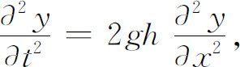
其中y是波在点x和时间t的振幅，g是重力加速度，h是与压强和密度有关的常数。欧拉当然知道这个方程和弦振动方程是一样的，因而在解这个方程时他没有在数学上做出什么新东西。
在第二篇文章(25)中，欧拉给出了二维传播方程，形如
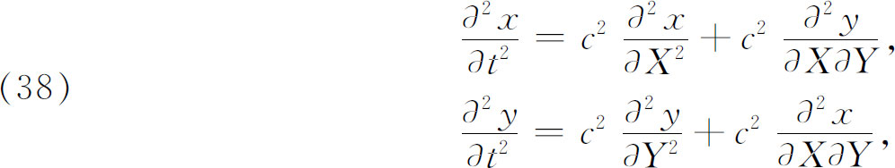
其中x和y分别是波在X方向和Y方向的振幅，或位移的分量，而
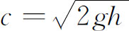
。他给出平面波解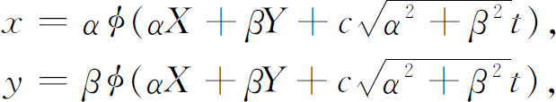
这里 是任意函数，而α，β是任意常数。然后令
是任意函数，而α，β是任意常数。然后令
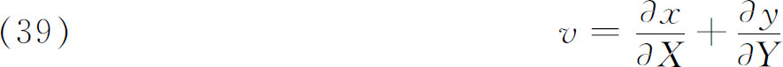
（v称为位移的散度），他就得到二维波动方程
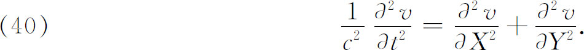
他还指出，为了得到问题的最一般的解以便适合某些初始条件，也就是说，v或x，y在t＝0的值，必须把解叠加起来。
然后欧拉还展示他怎样得到其解称为圆柱波的微分方程，圆柱波的得名是因为波的传播像一个扩展开去的圆柱面。他令
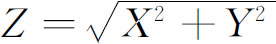
并引入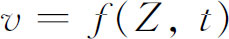
这里f是任意的。再令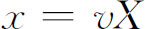
和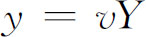
，他从（40）得到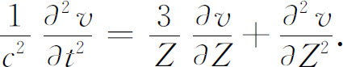
在同一篇文章中，他还用类似的方式得到三维波动方程
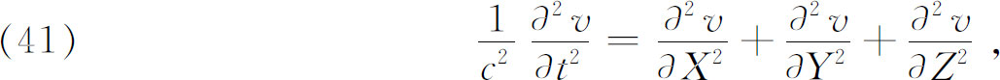
这里v仍然是位移（x，y，z）的散度。利用刚才对柱面波指出的那种变换，欧拉给出平面波解和球面波解。球面波的基本方程是
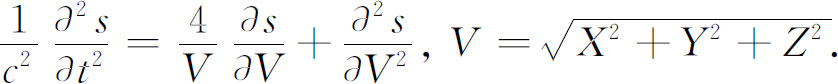
关于球面波和柱面波的上述很多结果，也曾由拉格朗日在1759年末独立地做出。他们每个人都把自己的结果通知对方。虽然拉格朗日的工作中有很多细节与欧拉的不同，但没有什么数学上的要点值得在此叙述。
研究声波在空气中的传播只是为了研究那些利用空气运动发声的乐器的一个步骤。这种研究是由丹尼尔·伯努利在1739年开创的。丹尼尔·伯努利、欧拉和拉格朗日写了许许多多涉及由种类繁多到难以置信的这类乐器所发出的音调的论文。1762年丹尼尔·伯努利在一个出版物(26)中证明，在圆柱形管（风琴管）的开口一端不能发生空气的压缩，在封闭的一端空气质点一定处于静止状态。他由此得出结论：两端封闭的或两端开口的管子，与长度减半一端开口一端封闭的管子有相同的基本模式。他还发现了风琴管泛音的频率是基音频率奇数倍的定理。在同一篇文章中，丹尼尔·伯努利还研究了圆柱形以外的管，特别是锥形管，对此他得到单个音调（模式）的表达式，而且认识到这些式子仅仅对无穷长的锥成立，而对截下一段的锥不成立。他还证明了（无穷长）锥形管的泛音与基音是和谐的。丹尼尔·伯努利用实验来证实了他的很多理论上的结果。
欧拉也研究了圆柱形管和非圆柱形的旋转面(27)，考察了开口端和封口端的反射。这些人致力于了解长笛，管风琴，双曲面形的、锥形的和圆柱形的各类喇叭，小号，军号和别的管乐器。
总之，关于解三四个变量的偏微分方程的这些努力受到了限制，主要因为与分别表示成x和t的简单的三角级数相反，现在解要表示成包含多个变量的级数。但是，数学家们对出现在这类更复杂的级数中的函数，以及确定系数的方法却知道得太少了，这样的方法很快得到了发展。
值得提到的是，欧拉在考虑铃的声音时，以及在重新考虑杆振动的某些问题时，引出了四阶偏微分方程。不过，他不能对此做很多的事，事实上，这个世纪其余时间内在这方面也没有什么进展。